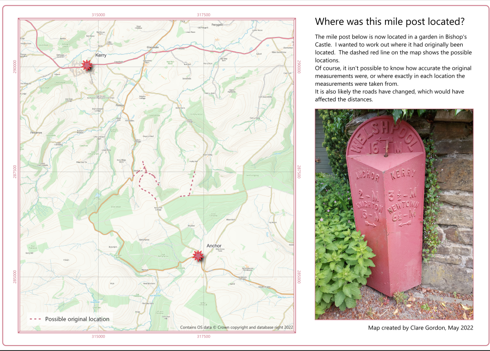

Lines 2
I originally started this map under the heading of points, but once I’d worked out the best method it ended up using lines instead.
Locating a relocated mile post
The photograph on the map layout shows a mile post now on display in a garden in Bishop’s Castle, which Mum and I visited on a Gardens Open Day. My challenge to myself was to work out where the mile post was originally located, based solely on the information it showed.

Data
What did I learn?
- It all took quite a bit of thinking through! Buffers would show the distance “as the crow flies”, so I used the OS OpenRoads data for the road network.
- I hadn’t come across the term “Service areas” before, but that was what I needed.
What do I want to change?
- Find a better background layer for this scale, maybe monochrome?
- I think I need to run the service areas analysis again. The point I’ve used for Anchor is probably at Anchor Bridge, rather than the hamlet itself, and I think that will give a smaller choice of locations for the mile post.
Process
First it would probably be useful to get the distances into metres rather than miles.
1 mile = 1609.344 metres
To convert:
Distance in miles x 1609.344
d(m) = d(mi) x 1609.344
Distances
| Place |
Miles |
Metres |
| Anchor |
2 |
3218.69 |
| Kerry |
3.5 |
5632.7 |
| Knighton |
15 |
24140.16 |
| Newtown |
6.5 |
10460.74 |
| Welshpool |
16 |
25749.5 |
As the crow flies
In QGIS
- Extracted locations from OS OpenZoom stack. Tried with Extract by Expression tool, but place names aren’t distinctive enough and ended up with too many locations.
- So extracted individually.
- Packaged results into a single geopackage
- Added Distance field to new layer and added distances in metres.
- Generated buffers.
Answer wasn’t clear with too much overlap between buffers.
With a road network to base the measurements on
Need distances, not times. So do I need full routing?
Could I do some variation on least cost paths? It’s only along roads, though.
- Travel x metres along roads from this point?
- Use RoadLink layer from OS Open Roads (Export just extent around points)
v.net.distance. Run between each location and Anchor - milepost was close to there.- Then run between Anchor and all others (for correct direction)
- For each output line,
Dissolve to obtain a single line.
Interpolate point on line - each one in turn and entering distance from the origin point.
Things to think about
- Actually, destination isn’t Anchor, so start with distances between Kerry and Anchor, then use that as destination point to see whether it works.
- It doesn’t. I need to calculate a point the correct distance from Anchor on each of the roads around it.
- Remember this is an old mile post - I don’t know how accurate the measurements are, or where they were measured from.
- The roads may have changed since the mile post, which would have an effect on distance.
Next go - the one that worked!
- Using
Service Area (From Layer) - run for each destination and generate lines.
- Used
Intersection to work out which of the resulting lines overlapped. The mile post should have been somewhere on the roads covered by all line layers.
This worked best - gave a small selection of lines of possible road locations.